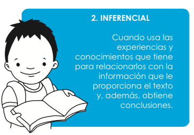
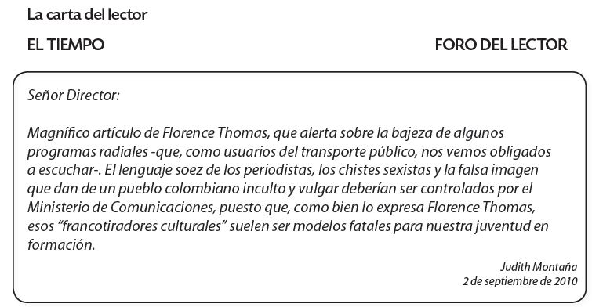
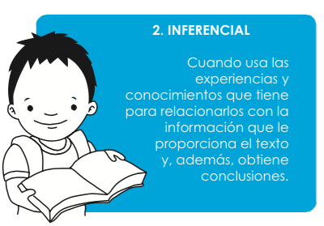
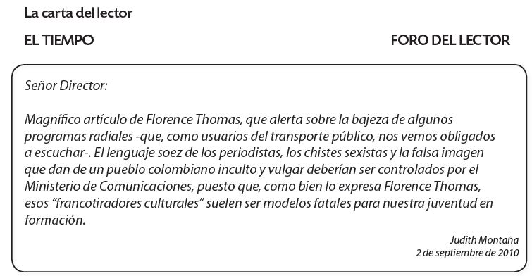

Nivel inferencial
En este nivel de lectura debes esforzarte por sacar tus propias conclusiones, crear hipótesis y relacionar tus conocimientos y lo que sabes con lo que te dice el texto.
Lee el siguiente texto y responde las preguntas:


Nivel inferencial
En este nivel de lectura debes esforzarte por sacar tus propias conclusiones, crear hipótesis y relacionar tus conocimientos y lo que sabes con lo que te dice el texto.
Lee el siguiente texto y responde las preguntas:

Obra publicada con Licencia Creative Commons Reconocimiento Compartir igual 4.0